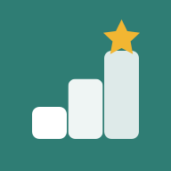
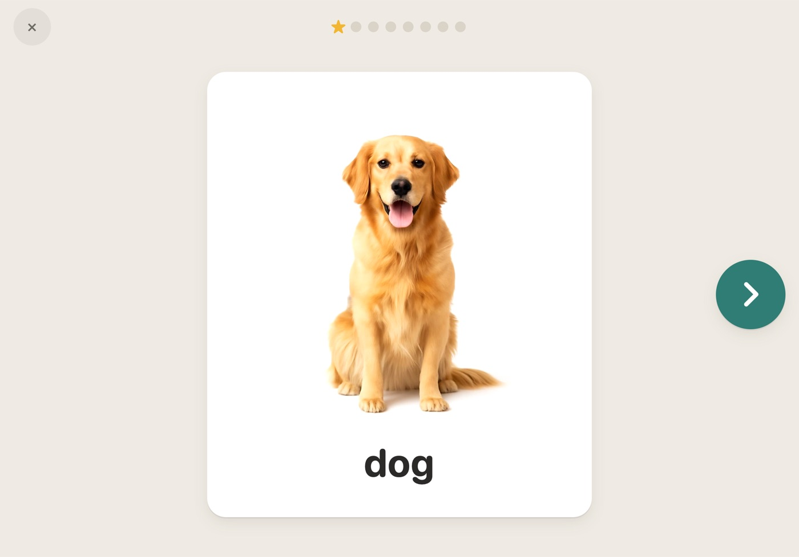
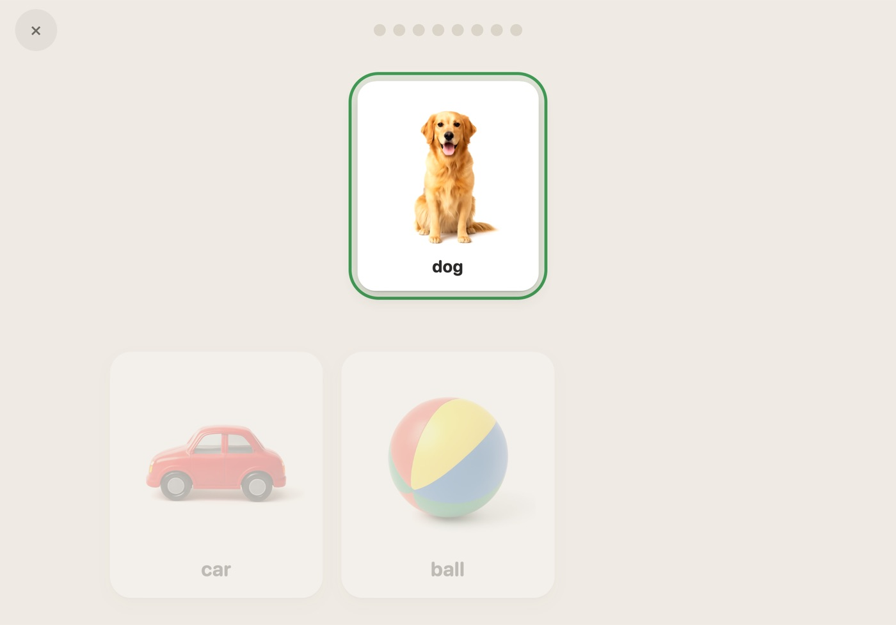
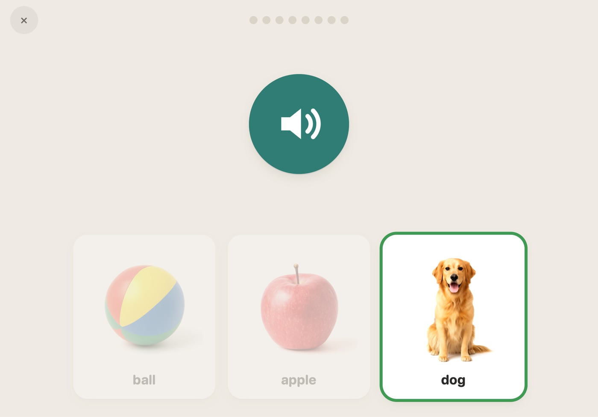
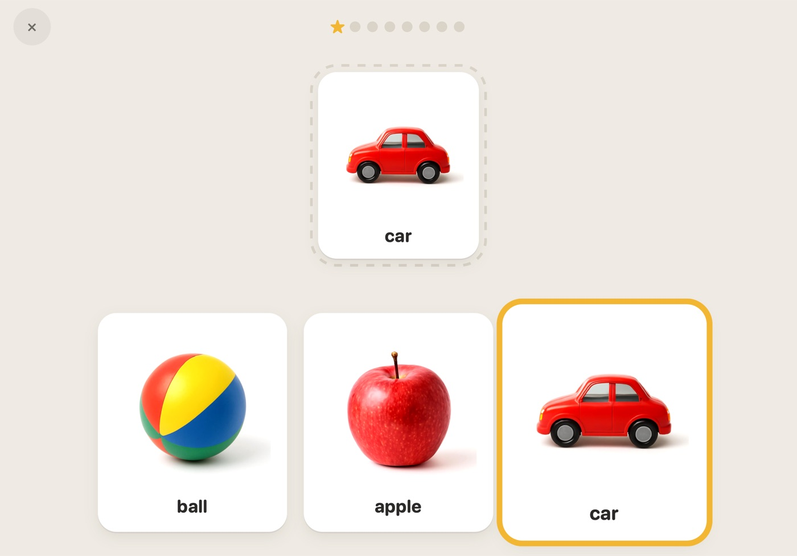
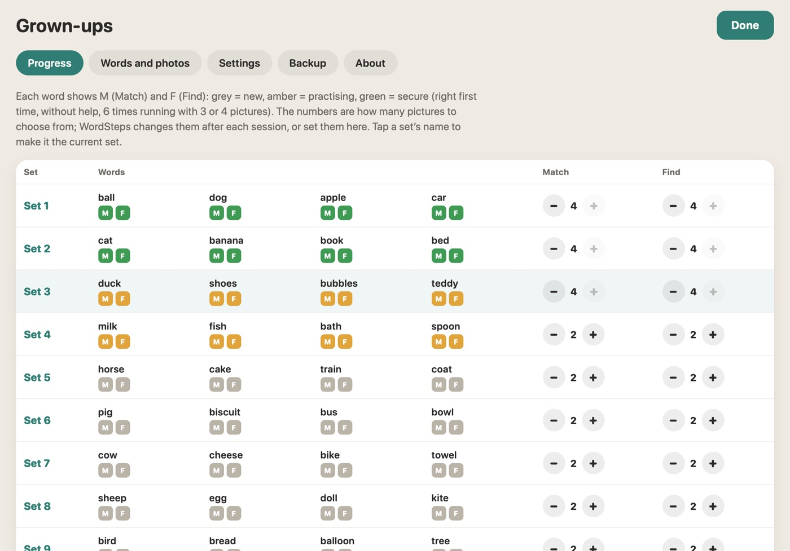

WordSteps Open WordStepsWordSteps is a free app for tablets that helps young children learn their first words. A grown-up and child use it together, a few minutes at a time.
Words come in sets of four. Each set is learned in the same three steps. When all four words are secure, a tick appears and you can move on to the next set.

One big, clear picture at a time, and its word said out loud. Say it together.

Tap the picture that's the same as the one at the top, and it slides into place.

Hear a word and find its picture. This shows they understand the word.
A wrong tap does nothing to the picture tapped. The right picture glows instead, and in Find the word is said again, so every go ends in success. If nothing is tapped for a few seconds, the same help appears.
Start with one or two pictures to choose from. After each session WordSteps adds a picture when they're getting it right, and takes one away when it's too hard.

Every answer is saved. Grown-ups see each word as new, practising or secure, for Match and Find, and every session. Hold the gear for a second to open it, so little fingers can't.

15 sets of 4: animals, food, toys and things at home, with clear photo-style pictures or symbols.
Use a photo of their own cup, teddy or dog for any word.
Every word is recorded in the same friendly voice, so it sounds the same every time.
Eight questions, stars along the way and an "All done!" at the end.
Plain background, one task on screen, nothing to tap but the pictures.
Stopping a session and the grown-ups' area both need a press and hold.
WordSteps runs from its web page, so there's nothing to buy or download from an app store. Once it's on the home screen it opens like an app and works offline. On iPad, installing also keeps progress and photos safe: Safari can clear a website's data if it isn't opened for a while, but not an app on the Home Screen.
This opens WordSteps and shows the steps for your tablet. When the top of WordSteps says ✓ Ready offline, everything is saved and it works without Wi-Fi.
Young children learning their first words, including children who learn best by seeing, such as many children with Down syndrome. It works with speech, signing or pointing: the child doesn't have to say the word.
It follows the small-steps idea used by programmes such as See and Learn: clear pictures, matching before selecting, short sessions and lots of success. WordSteps isn't connected with See and Learn, and it doesn't replace their materials or advice from a speech and language therapist.
A few minutes. A session is 8 questions by default, and you can change that in the grown-ups' settings. Little and often works better than long sessions.
Yes. There's nothing to pay now or later, and no ads.
Only to install it. After that everything, pictures and voice included, works offline.
If you've saved a backup (grown-ups → Backup), open WordSteps on the new tablet and restore it.